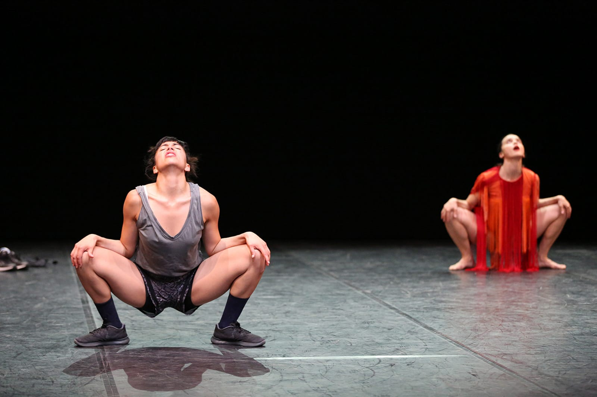
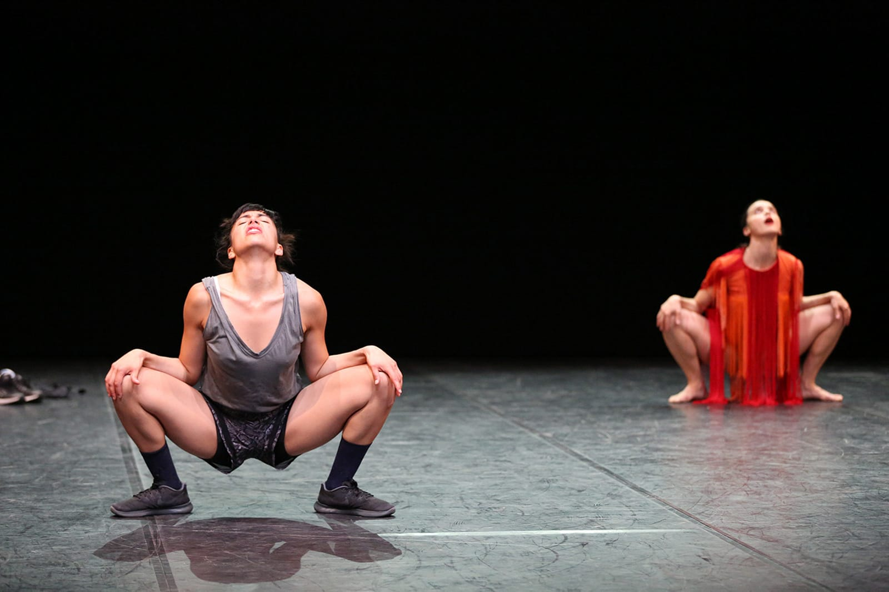

In music, a mash-up is a track that has been created by freely mixing two or more samples, through
the appropriation and manipulation of the elements. Mash partly adopts the same principle in the
choreographic area, to create a new relational dimension, both hybrid and dynamic, where neither of
the parts is deleted and exchanges are continuous.
The keyword here is contamination: far from the philological study or the reproduction of materials
put in place, the focus is on the dynamic unleashed when the fragments connect and generate
something completely new, full of original meaning.
The scene is in constant mutation and becomes the sight of coexistence, a place of belonging and
disorientation, which forces towards an endless process of acclimatization. An unbroken dynamics of
exchange is the baseline of the performance, a simultaneous and mutual translation. The accelerated
spinning of this translation separates what has become superfluous from the signs, gestures, and
expressions that are indelibly inscribed in the physical alphabet.
An inter-form is thus generated, composed of a mixture of languages that do not need to assert
themselves. On the contrary, by not imposing, they create the conditions for a true encounter.
Production Cab 008 & Fabrik Cassiopée.
In collaboration with Le Quartz / Scène nationale de Brest, Danae Festival in the context of
Next
2016 – Regione Lombardia.
Project realized as part of Armunia / Festival Inequilibrio / Centro di residenza, MosaicoDanza
/
Interplay Festival and Fondazione Piemonte dal Vivo, Residenza NaoCrea / Ariella Vidach-Aiep,
Residenza Graner / Mercat de les flors.
With the support of MiBACT and Regione Toscana.
A project DE.MO. / Movin’up II 2016 supported by MiBACT / Direzione Generale Arte e Architettura
Contemporanee e Periferie Urbane / Direzione Generale Spettacolo and GAI – Associazione per il
Circuito dei Giovani Artisti Italiani.
Created and performed by
Annamaria Ajmone
& Marcela Santander Corvalán
Music research and mix
Federica Zamboni
Light design and technical direction
Giulia Pastore


 
